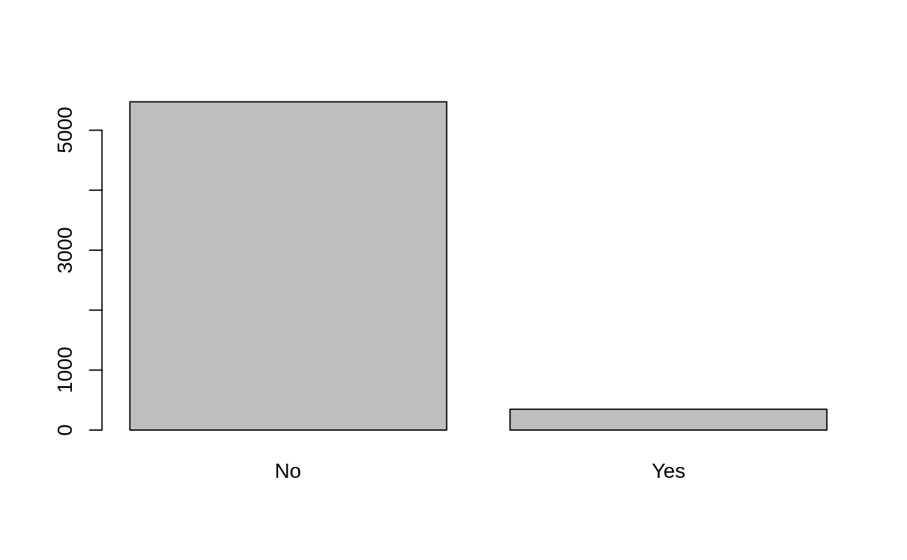

Caravan.RdThe data contains 5822 real customer records. Each record
consists of 86 variables, containing sociodemographic data (variables
1-43) and product ownership (variables 44-86). The sociodemographic
data is derived from zip codes. All customers living in areas with the
same zip code have the same sociodemographic attributes. Variable 86
(Purchase) indicates whether the customer purchased a caravan
insurance policy. Further information on the individual variables can
be obtained at http://www.liacs.nl/~putten/library/cc2000/data.html
Caravan
A data frame with 5822 observations on 86 variables.
The data was originally supplied by Sentient Machine Research and was used in the CoIL Challenge 2000.
P. van der Putten and M. van Someren (eds) . CoIL Challenge
2000: The Insurance Company Case. Published by Sentient Machine
Research, Amsterdam. Also a Leiden Institute of Advanced Computer
Science Technical Report 2000-09. June 22, 2000. See
http://www.liacs.nl/~putten/library/cc2000/
P. van der Putten and M. van Someren. A Bias-Variance Analysis of a Real World Learning Problem: The CoIL Challenge 2000. Machine Learning, October 2004, vol. 57, iss. 1-2, pp. 177-195, Kluwer Academic Publishers
James, G., Witten, D., Hastie, T., and Tibshirani, R. (2013)
An Introduction to Statistical Learning with applications in R,
www.StatLearning.com,
Springer-Verlag, New York
summary(Caravan)#> MOSTYPE MAANTHUI MGEMOMV MGEMLEEF #> Min. : 1.00 Min. : 1.000 Min. :1.000 Min. :1.000 #> 1st Qu.:10.00 1st Qu.: 1.000 1st Qu.:2.000 1st Qu.:2.000 #> Median :30.00 Median : 1.000 Median :3.000 Median :3.000 #> Mean :24.25 Mean : 1.111 Mean :2.679 Mean :2.991 #> 3rd Qu.:35.00 3rd Qu.: 1.000 3rd Qu.:3.000 3rd Qu.:3.000 #> Max. :41.00 Max. :10.000 Max. :5.000 Max. :6.000 #> MOSHOOFD MGODRK MGODPR MGODOV #> Min. : 1.000 Min. :0.0000 Min. :0.000 Min. :0.00 #> 1st Qu.: 3.000 1st Qu.:0.0000 1st Qu.:4.000 1st Qu.:0.00 #> Median : 7.000 Median :0.0000 Median :5.000 Median :1.00 #> Mean : 5.774 Mean :0.6965 Mean :4.627 Mean :1.07 #> 3rd Qu.: 8.000 3rd Qu.:1.0000 3rd Qu.:6.000 3rd Qu.:2.00 #> Max. :10.000 Max. :9.0000 Max. :9.000 Max. :5.00 #> MGODGE MRELGE MRELSA MRELOV #> Min. :0.000 Min. :0.000 Min. :0.0000 Min. :0.00 #> 1st Qu.:2.000 1st Qu.:5.000 1st Qu.:0.0000 1st Qu.:1.00 #> Median :3.000 Median :6.000 Median :1.0000 Median :2.00 #> Mean :3.259 Mean :6.183 Mean :0.8835 Mean :2.29 #> 3rd Qu.:4.000 3rd Qu.:7.000 3rd Qu.:1.0000 3rd Qu.:3.00 #> Max. :9.000 Max. :9.000 Max. :7.0000 Max. :9.00 #> MFALLEEN MFGEKIND MFWEKIND MOPLHOOG MOPLMIDD #> Min. :0.000 Min. :0.00 Min. :0.0 Min. :0.000 Min. :0.000 #> 1st Qu.:0.000 1st Qu.:2.00 1st Qu.:3.0 1st Qu.:0.000 1st Qu.:2.000 #> Median :2.000 Median :3.00 Median :4.0 Median :1.000 Median :3.000 #> Mean :1.888 Mean :3.23 Mean :4.3 Mean :1.461 Mean :3.351 #> 3rd Qu.:3.000 3rd Qu.:4.00 3rd Qu.:6.0 3rd Qu.:2.000 3rd Qu.:4.000 #> Max. :9.000 Max. :9.00 Max. :9.0 Max. :9.000 Max. :9.000 #> MOPLLAAG MBERHOOG MBERZELF MBERBOER #> Min. :0.000 Min. :0.000 Min. :0.000 Min. :0.0000 #> 1st Qu.:3.000 1st Qu.:0.000 1st Qu.:0.000 1st Qu.:0.0000 #> Median :5.000 Median :2.000 Median :0.000 Median :0.0000 #> Mean :4.572 Mean :1.895 Mean :0.398 Mean :0.5223 #> 3rd Qu.:6.000 3rd Qu.:3.000 3rd Qu.:1.000 3rd Qu.:1.0000 #> Max. :9.000 Max. :9.000 Max. :5.000 Max. :9.0000 #> MBERMIDD MBERARBG MBERARBO MSKA MSKB1 #> Min. :0.000 Min. :0.00 Min. :0.000 Min. :0.000 Min. :0.000 #> 1st Qu.:2.000 1st Qu.:1.00 1st Qu.:1.000 1st Qu.:0.000 1st Qu.:1.000 #> Median :3.000 Median :2.00 Median :2.000 Median :1.000 Median :2.000 #> Mean :2.899 Mean :2.22 Mean :2.306 Mean :1.621 Mean :1.607 #> 3rd Qu.:4.000 3rd Qu.:3.00 3rd Qu.:3.000 3rd Qu.:2.000 3rd Qu.:2.000 #> Max. :9.000 Max. :9.00 Max. :9.000 Max. :9.000 Max. :9.000 #> MSKB2 MSKC MSKD MHHUUR #> Min. :0.000 Min. :0.000 Min. :0.000 Min. :0.000 #> 1st Qu.:1.000 1st Qu.:2.000 1st Qu.:0.000 1st Qu.:2.000 #> Median :2.000 Median :4.000 Median :1.000 Median :4.000 #> Mean :2.203 Mean :3.759 Mean :1.067 Mean :4.237 #> 3rd Qu.:3.000 3rd Qu.:5.000 3rd Qu.:2.000 3rd Qu.:7.000 #> Max. :9.000 Max. :9.000 Max. :9.000 Max. :9.000 #> MHKOOP MAUT1 MAUT2 MAUT0 MZFONDS #> Min. :0.000 Min. :0.00 Min. :0.000 Min. :0.000 Min. :0.000 #> 1st Qu.:2.000 1st Qu.:5.00 1st Qu.:0.000 1st Qu.:1.000 1st Qu.:5.000 #> Median :5.000 Median :6.00 Median :1.000 Median :2.000 Median :7.000 #> Mean :4.772 Mean :6.04 Mean :1.316 Mean :1.959 Mean :6.277 #> 3rd Qu.:7.000 3rd Qu.:7.00 3rd Qu.:2.000 3rd Qu.:3.000 3rd Qu.:8.000 #> Max. :9.000 Max. :9.00 Max. :7.000 Max. :9.000 Max. :9.000 #> MZPART MINKM30 MINK3045 MINK4575 #> Min. :0.000 Min. :0.000 Min. :0.000 Min. :0.000 #> 1st Qu.:1.000 1st Qu.:1.000 1st Qu.:2.000 1st Qu.:1.000 #> Median :2.000 Median :2.000 Median :4.000 Median :3.000 #> Mean :2.729 Mean :2.574 Mean :3.536 Mean :2.731 #> 3rd Qu.:4.000 3rd Qu.:4.000 3rd Qu.:5.000 3rd Qu.:4.000 #> Max. :9.000 Max. :9.000 Max. :9.000 Max. :9.000 #> MINK7512 MINK123M MINKGEM MKOOPKLA #> Min. :0.0000 Min. :0.0000 Min. :0.000 Min. :1.000 #> 1st Qu.:0.0000 1st Qu.:0.0000 1st Qu.:3.000 1st Qu.:3.000 #> Median :0.0000 Median :0.0000 Median :4.000 Median :4.000 #> Mean :0.7961 Mean :0.2027 Mean :3.784 Mean :4.236 #> 3rd Qu.:1.0000 3rd Qu.:0.0000 3rd Qu.:4.000 3rd Qu.:6.000 #> Max. :9.0000 Max. :9.0000 Max. :9.000 Max. :8.000 #> PWAPART PWABEDR PWALAND PPERSAUT #> Min. :0.0000 Min. :0.00000 Min. :0.00000 Min. :0.00 #> 1st Qu.:0.0000 1st Qu.:0.00000 1st Qu.:0.00000 1st Qu.:0.00 #> Median :0.0000 Median :0.00000 Median :0.00000 Median :5.00 #> Mean :0.7712 Mean :0.04002 Mean :0.07162 Mean :2.97 #> 3rd Qu.:2.0000 3rd Qu.:0.00000 3rd Qu.:0.00000 3rd Qu.:6.00 #> Max. :3.0000 Max. :6.00000 Max. :4.00000 Max. :8.00 #> PBESAUT PMOTSCO PVRAAUT PAANHANG #> Min. :0.00000 Min. :0.0000 Min. :0.000000 Min. :0.00000 #> 1st Qu.:0.00000 1st Qu.:0.0000 1st Qu.:0.000000 1st Qu.:0.00000 #> Median :0.00000 Median :0.0000 Median :0.000000 Median :0.00000 #> Mean :0.04827 Mean :0.1754 Mean :0.009447 Mean :0.02096 #> 3rd Qu.:0.00000 3rd Qu.:0.0000 3rd Qu.:0.000000 3rd Qu.:0.00000 #> Max. :7.00000 Max. :7.0000 Max. :9.000000 Max. :5.00000 #> PTRACTOR PWERKT PBROM PLEVEN #> Min. :0.00000 Min. :0.00000 Min. :0.000 Min. :0.0000 #> 1st Qu.:0.00000 1st Qu.:0.00000 1st Qu.:0.000 1st Qu.:0.0000 #> Median :0.00000 Median :0.00000 Median :0.000 Median :0.0000 #> Mean :0.09258 Mean :0.01305 Mean :0.215 Mean :0.1948 #> 3rd Qu.:0.00000 3rd Qu.:0.00000 3rd Qu.:0.000 3rd Qu.:0.0000 #> Max. :6.00000 Max. :6.00000 Max. :6.000 Max. :9.0000 #> PPERSONG PGEZONG PWAOREG PBRAND #> Min. :0.00000 Min. :0.00000 Min. :0.00000 Min. :0.000 #> 1st Qu.:0.00000 1st Qu.:0.00000 1st Qu.:0.00000 1st Qu.:0.000 #> Median :0.00000 Median :0.00000 Median :0.00000 Median :2.000 #> Mean :0.01374 Mean :0.01529 Mean :0.02353 Mean :1.828 #> 3rd Qu.:0.00000 3rd Qu.:0.00000 3rd Qu.:0.00000 3rd Qu.:4.000 #> Max. :6.00000 Max. :3.00000 Max. :7.00000 Max. :8.000 #> PZEILPL PPLEZIER PFIETS PINBOED #> Min. :0.0000000 Min. :0.00000 Min. :0.00000 Min. :0.00000 #> 1st Qu.:0.0000000 1st Qu.:0.00000 1st Qu.:0.00000 1st Qu.:0.00000 #> Median :0.0000000 Median :0.00000 Median :0.00000 Median :0.00000 #> Mean :0.0008588 Mean :0.01889 Mean :0.02525 Mean :0.01563 #> 3rd Qu.:0.0000000 3rd Qu.:0.00000 3rd Qu.:0.00000 3rd Qu.:0.00000 #> Max. :3.0000000 Max. :6.00000 Max. :1.00000 Max. :6.00000 #> PBYSTAND AWAPART AWABEDR AWALAND #> Min. :0.00000 Min. :0.000 Min. :0.00000 Min. :0.00000 #> 1st Qu.:0.00000 1st Qu.:0.000 1st Qu.:0.00000 1st Qu.:0.00000 #> Median :0.00000 Median :0.000 Median :0.00000 Median :0.00000 #> Mean :0.04758 Mean :0.403 Mean :0.01477 Mean :0.02061 #> 3rd Qu.:0.00000 3rd Qu.:1.000 3rd Qu.:0.00000 3rd Qu.:0.00000 #> Max. :5.00000 Max. :2.000 Max. :5.00000 Max. :1.00000 #> APERSAUT ABESAUT AMOTSCO AVRAAUT #> Min. :0.0000 Min. :0.00000 Min. :0.00000 Min. :0.000000 #> 1st Qu.:0.0000 1st Qu.:0.00000 1st Qu.:0.00000 1st Qu.:0.000000 #> Median :1.0000 Median :0.00000 Median :0.00000 Median :0.000000 #> Mean :0.5622 Mean :0.01048 Mean :0.04105 Mean :0.002233 #> 3rd Qu.:1.0000 3rd Qu.:0.00000 3rd Qu.:0.00000 3rd Qu.:0.000000 #> Max. :7.0000 Max. :4.00000 Max. :8.00000 Max. :3.000000 #> AAANHANG ATRACTOR AWERKT ABROM #> Min. :0.00000 Min. :0.00000 Min. :0.000000 Min. :0.00000 #> 1st Qu.:0.00000 1st Qu.:0.00000 1st Qu.:0.000000 1st Qu.:0.00000 #> Median :0.00000 Median :0.00000 Median :0.000000 Median :0.00000 #> Mean :0.01254 Mean :0.03367 Mean :0.006183 Mean :0.07042 #> 3rd Qu.:0.00000 3rd Qu.:0.00000 3rd Qu.:0.000000 3rd Qu.:0.00000 #> Max. :3.00000 Max. :4.00000 Max. :6.000000 Max. :2.00000 #> ALEVEN APERSONG AGEZONG AWAOREG #> Min. :0.00000 Min. :0.000000 Min. :0.000000 Min. :0.000000 #> 1st Qu.:0.00000 1st Qu.:0.000000 1st Qu.:0.000000 1st Qu.:0.000000 #> Median :0.00000 Median :0.000000 Median :0.000000 Median :0.000000 #> Mean :0.07661 Mean :0.005325 Mean :0.006527 Mean :0.004638 #> 3rd Qu.:0.00000 3rd Qu.:0.000000 3rd Qu.:0.000000 3rd Qu.:0.000000 #> Max. :8.00000 Max. :1.000000 Max. :1.000000 Max. :2.000000 #> ABRAND AZEILPL APLEZIER AFIETS #> Min. :0.0000 Min. :0.0000000 Min. :0.000000 Min. :0.00000 #> 1st Qu.:0.0000 1st Qu.:0.0000000 1st Qu.:0.000000 1st Qu.:0.00000 #> Median :1.0000 Median :0.0000000 Median :0.000000 Median :0.00000 #> Mean :0.5701 Mean :0.0005153 Mean :0.006012 Mean :0.03178 #> 3rd Qu.:1.0000 3rd Qu.:0.0000000 3rd Qu.:0.000000 3rd Qu.:0.00000 #> Max. :7.0000 Max. :1.0000000 Max. :2.000000 Max. :3.00000 #> AINBOED ABYSTAND Purchase #> Min. :0.000000 Min. :0.00000 No :5474 #> 1st Qu.:0.000000 1st Qu.:0.00000 Yes: 348 #> Median :0.000000 Median :0.00000 #> Mean :0.007901 Mean :0.01426 #> 3rd Qu.:0.000000 3rd Qu.:0.00000 #> Max. :2.000000 Max. :2.00000